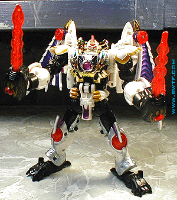
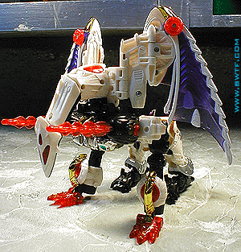
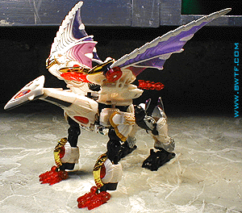
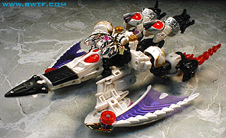
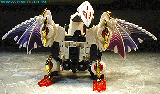

Allegiance
: Predacon
Size
: Ultra
Difficulty of Transformation
: Medium
Japanese Name
: Devil Gigatron
Color Scheme
: Pearly white, black,
bluish silver, chrome gold, transparent red, transparent violet, and some
yellow-gold, chrome silver, chrome green, chrome red, dark grayish silver,
white, dark red, and purple
Mold History
: Galvatron is a repaint
of RiD Megatron, which was a completely new mold created for Car Robots
(which subsequently became Robots in Disguise).
Rating
: 7.6
(NOTE: Because this is a repaint, this is not a full-blown review. This mainly covers any changes made to the mold and the color scheme, and merely compares it to RiD Megatron. For a review on the mold itself, read the review of RiD Megatron here .)

Galvatron is meant to
be an "upgraded" version of RiD Megs- however, he is exactly the same mold-wise,
so more modes were added to make him feel more "powered-up". The truth
is, the "extra modes" described below can actually be done by RiD Megatron
as well, so it's really just a moot point. Galvatron is, for all purposes,
a repaint, just with a couple of extra alt modes slapped on the instructions.
This review will cover all the extra modes that come with Galvatron, but
not Megatron. Pictures of all the various "original" alt modes (minus the
robot mode) can be found in the RiD Megatron review.
First off, Galvatron's
color scheme is very striking. The white, black, and gold complement each
other immensely, as do the silver and the red. The transparent purple seems
a teensy bit out of place, but it doesn't contrast with the rest that much.
The silver and gold combination with the chrome-y stuff, as well as the
red and green accents, also make the chest look strikingly beautiful. As
with RiD Megs, though, you need to be careful- the chest can chip rather
easily, same with the "ear fins". The detailing is still exquisite, and,
if anything, it's slightly better than that on RiD Megatron.
Overall, though, the
color scheme is not quite as fitting for bad guy leader as the original
one was on RiD Megatron. The white doesn't really scream "I'm a bad guy!"
to me, while the purple of ol' Megs did. As such, he doesn't rate quite
as high as Megatron on my list.
Now, on to the new alt modes:

Probably Galvatron's
oddest new alt mode is his "elephant mode". Although the large wings can
be seen as ears, and the cockpit-do-hickey thing can be seen as a trunk
and eyes, the rest of the mode is pretty iffy. If doesn't have the bulk
of an elephant, or a tail. The rest is just very obviously Galvatron's
robot mode, bent over. Pretty poor alt mode, really.

Another of Galvatron's
new modes is a "griffin" mode. The problem is, this doesn't really look
like a griffin at all, but some kind of nondescript, four-legged, flying
creature. I suppose the face could possibly be interpreted as some sort
of robotic bird face, but it's a bit of a stretch. And again, the rest
of the mode is just Galvatron's robot mode bent over. Almost as poor as
the elephant mode.

Galvatron's "transport"
mode is probably his worst mode of all. Erm... what IS this thing? His
griffin mode in its back with its appendages folded up? Yeah, pretty much.
Don't really see how that qualifies it as a "transport". Blech.

Galvatron's next new
mode is a "dragon" mode. "But wait! Doesn't Galvatron already HAVE a dragon
mode?" Well, yes, Billy, but this is a CRUDDY dragon mode! See, it's just
his griffin mode, but on two legs! That makes it a dragon! "Oh, okay! Thanks,
Beastbot!" You're welcome, Billy. You just remember to point out to your
mythology teacher that THIS techno-parrot-thing is a dragon, not that scaly,
four-legged abomination you see that has been mistaken for a "dragon" many
times before. "What's mythology?" Uh... class dismissed, Billy.
Overall, Galvatron's four extra "modes" are a joke. The griffin mode is the only one that even remotely comes close to good. However, his color scheme and detailing are excellent, as his articulation, and his robot mode just rocks all. But, despite his extra modes and his extra paint detailing, I can't put him above RiD Megatron, because, with the addition of the four new ones, now nearly all of his alt modes are bad, and his color scheme isn't quite as good as the original's.
Review by Beastbot